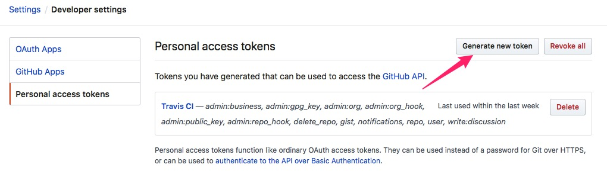

<!DOCTYPE html>
<!--[if IE 8]><html class="no-js lt-ie9" lang="en" > <![endif]-->
<!--[if gt IE 8]><!--> <html class="no-js" lang="en" > <!--<![endif]-->
<head>
  <meta charset="utf-8">
  
  <meta name="viewport" content="width=device-width, initial-scale=1.0">
  
  <title>Sphinx Project Build &mdash; Sphinx-ReadTheDocs 1.0.0 documentation</title>
  

  
  
  
  

  
  <script type="text/javascript" src="../_static/js/modernizr.min.js"></script>
  
    
      <script type="text/javascript" id="documentation_options" data-url_root="../" src="../_static/documentation_options.js"></script>
        <script type="text/javascript" src="../_static/jquery.js"></script>
        <script type="text/javascript" src="../_static/underscore.js"></script>
        <script type="text/javascript" src="../_static/doctools.js"></script>
        <script type="text/javascript" src="../_static/language_data.js"></script>
    
    <script type="text/javascript" src="../_static/js/theme.js"></script>

    

  
  <link rel="stylesheet" href="../_static/css/theme.css" type="text/css" />
  <link rel="stylesheet" href="../_static/pygments.css" type="text/css" />
    <link rel="index" title="Index" href="../genindex.html" />
    <link rel="search" title="Search" href="../search.html" />
    <link rel="next" title="Travis Setting" href="Travis-Setting.html" />
    <link rel="prev" title="Environment" href="Environment.html" /> 
</head>

<body class="wy-body-for-nav">

   
  <div class="wy-grid-for-nav">
    
    <nav data-toggle="wy-nav-shift" class="wy-nav-side">
      <div class="wy-side-scroll">
        <div class="wy-side-nav-search" >
          

          
            <a href="../index.html" class="icon icon-home"> Sphinx-ReadTheDocs
          

          
          </a>

          
            
            
          

          
<div role="search">
  <form id="rtd-search-form" class="wy-form" action="../search.html" method="get">
    <input type="text" name="q" placeholder="Search docs" />
    <input type="hidden" name="check_keywords" value="yes" />
    <input type="hidden" name="area" value="default" />
  </form>
</div>

          
        </div>

        <div class="wy-menu wy-menu-vertical" data-spy="affix" role="navigation" aria-label="main navigation">
          
            
            
              
            
            
              <p class="caption"><span class="caption-text">Contents:</span></p>
<ul class="current">
<li class="toctree-l1"><a class="reference internal" href="Introduction.html">Introduction</a></li>
<li class="toctree-l1"><a class="reference internal" href="Environment.html">Environment</a></li>
<li class="toctree-l1 current"><a class="current reference internal" href="#">Sphinx Project Build</a><ul>
<li class="toctree-l2"><a class="reference internal" href="#outline">Outline</a></li>
<li class="toctree-l2"><a class="reference internal" href="#sphinx-initialization">Sphinx initialization</a></li>
<li class="toctree-l2"><a class="reference internal" href="#git-initialization">Git Initialization</a></li>
<li class="toctree-l2"><a class="reference internal" href="#github-tocken">GitHub Tocken</a></li>
</ul>
</li>
<li class="toctree-l1"><a class="reference internal" href="Travis-Setting.html">Travis Setting</a></li>
<li class="toctree-l1"><a class="reference internal" href="Travis-Build.html">Travis Build</a></li>
<li class="toctree-l1"><a class="reference internal" href="GitHub-Pages.html">Github Pages</a></li>
<li class="toctree-l1"><a class="reference internal" href="Math-Support.html">Math Support</a></li>
</ul>

            
          
        </div>
      </div>
    </nav>

    <section data-toggle="wy-nav-shift" class="wy-nav-content-wrap">

      
      <nav class="wy-nav-top" aria-label="top navigation">
        
          <i data-toggle="wy-nav-top" class="fa fa-bars"></i>
          <a href="../index.html">Sphinx-ReadTheDocs</a>
        
      </nav>


      <div class="wy-nav-content">
        
        <div class="rst-content">
        
          


<div role="navigation" aria-label="breadcrumbs navigation">

  <ul class="wy-breadcrumbs">
    
      <li><a href="../index.html">Docs</a> &raquo;</li>
        
      <li>Sphinx Project Build</li>
    
    
      <li class="wy-breadcrumbs-aside">
        
            
            <a href="../_sources/docs/Git-Build.md.txt" rel="nofollow"> View page source</a>
          
        
      </li>
    
  </ul>

  
  <hr/>
</div>
          <div role="main" class="document" itemscope="itemscope" itemtype="http://schema.org/Article">
           <div itemprop="articleBody">
            
  <div class="section" id="sphinx-project-build">
<h1>Sphinx Project Build<a class="headerlink" href="#sphinx-project-build" title="Permalink to this headline">¶</a></h1>
<div class="section" id="outline">
<h2>Outline<a class="headerlink" href="#outline" title="Permalink to this headline">¶</a></h2>
<ul class="simple">
<li><p>Sphinx initialization</p></li>
<li><p>git initialization</p></li>
<li><p>GitHub tocken</p></li>
</ul>
</div>
<div class="section" id="sphinx-initialization">
<h2>Sphinx initialization<a class="headerlink" href="#sphinx-initialization" title="Permalink to this headline">¶</a></h2>
<p>Getting started is super easy.</p>
<div class="highlight-default notranslate"><div class="highlight"><pre><span></span><span class="n">mkdir</span> <span class="n">my</span><span class="o">-</span><span class="n">project</span>
<span class="n">cd</span> <span class="n">my</span><span class="o">-</span><span class="n">project</span>
<span class="n">sphinx</span><span class="o">-</span><span class="n">quickstart</span>
</pre></div>
</div>
<div class="highlight-default notranslate"><div class="highlight"><pre><span></span><span class="o">&gt;</span> <span class="n">Separate</span> <span class="n">source</span> <span class="ow">and</span> <span class="n">build</span> <span class="n">directories</span> <span class="p">(</span><span class="n">y</span><span class="o">/</span><span class="n">n</span><span class="p">)</span> <span class="p">[</span><span class="n">n</span><span class="p">]:</span> <span class="n">y</span>
<span class="o">&gt;</span> <span class="n">Project</span> <span class="n">name</span><span class="p">:</span> <span class="n">Sphinx</span><span class="o">-</span><span class="n">ReadTheDocs</span>
<span class="o">&gt;</span> <span class="n">Author</span> <span class="n">name</span><span class="p">(</span><span class="n">s</span><span class="p">):</span> <span class="n">seel</span>
<span class="o">&gt;</span> <span class="n">Project</span> <span class="n">release</span> <span class="p">[]:</span> <span class="mf">1.0</span><span class="o">.</span><span class="mi">0</span>
<span class="o">&gt;</span> <span class="n">Project</span> <span class="n">language</span> <span class="p">[</span><span class="n">en</span><span class="p">]:</span>
</pre></div>
</div>
<p>There’s a single configuration file named <code class="docutils literal notranslate"><span class="pre">index.rst</span></code>, and a folder named <code class="docutils literal notranslate"><span class="pre">source</span></code> that will contain your documentation source files.</p>
<p></p>
<p><strong>Change theme <code class="docutils literal notranslate"><span class="pre">sphinx_rtd_theme</span></code></strong>
Change <code class="docutils literal notranslate"><span class="pre">source/conf.py</span></code>:</p>
<div class="highlight-Python notranslate"><div class="highlight"><pre><span></span><span class="kn">import</span> <span class="nn">sphinx_rtd_theme</span>
<span class="n">html_theme</span> <span class="o">=</span> <span class="s2">&quot;sphinx_rtd_theme&quot;</span>
<span class="n">html_theme_path</span> <span class="o">=</span> <span class="p">[</span><span class="n">sphinx_rtd_theme</span><span class="o">.</span><span class="n">get_html_theme_path</span><span class="p">()]</span>
</pre></div>
</div>
<p>You can not start serve like gitbook or MkDocs. You can only build the web by the following step:</p>
<div class="highlight-default notranslate"><div class="highlight"><pre><span></span><span class="n">make</span> <span class="n">html</span>
</pre></div>
</div>
<p>Go to the <code class="docutils literal notranslate"><span class="pre">build/html</span></code> directory and open <code class="docutils literal notranslate"><span class="pre">index.html</span></code> with your browser.
</p>
<p><strong>Markdown Support</strong>
By installing <code class="docutils literal notranslate"><span class="pre">recommonmark</span></code> to support markdown</p>
<div class="highlight-default notranslate"><div class="highlight"><pre><span></span><span class="n">pip</span> <span class="n">install</span> <span class="n">recommonmark</span>
</pre></div>
</div>
<p>and edit <code class="docutils literal notranslate"><span class="pre">conf.py</span></code></p>
<div class="highlight-default notranslate"><div class="highlight"><pre><span></span><span class="kn">from</span> <span class="nn">recommonmark.parser</span> <span class="k">import</span> <span class="n">CommonMarkParser</span>
<span class="n">source_parsers</span> <span class="o">=</span> <span class="p">{</span>
    <span class="s1">&#39;.md&#39;</span><span class="p">:</span> <span class="n">CommonMarkParser</span><span class="p">,</span>
<span class="p">}</span>
<span class="n">source_suffix</span> <span class="o">=</span> <span class="p">[</span><span class="s1">&#39;.rst&#39;</span><span class="p">,</span> <span class="s1">&#39;.md&#39;</span><span class="p">]</span>
</pre></div>
</div>
</div>
<div class="section" id="git-initialization">
<h2>Git Initialization<a class="headerlink" href="#git-initialization" title="Permalink to this headline">¶</a></h2>
<p>Enter <code class="docutils literal notranslate"><span class="pre">&lt;your</span> <span class="pre">project&gt;</span></code> folder through the terminal.</p>
<div class="highlight-default notranslate"><div class="highlight"><pre><span></span><span class="n">git</span> <span class="n">init</span>
<span class="n">git</span> <span class="n">add</span> <span class="o">.</span>
<span class="n">git</span> <span class="n">commit</span> <span class="o">-</span><span class="n">m</span> <span class="s2">&quot;Basic Sphinx files&quot;</span>
</pre></div>
</div>
</div>
<div class="section" id="github-tocken">
<h2>GitHub Tocken<a class="headerlink" href="#github-tocken" title="Permalink to this headline">¶</a></h2>
<p>We need <code class="docutils literal notranslate"><span class="pre">GITHUB_TOKEN</span></code> for Travis to build Mkdocs. So we generate one in <a class="reference external" href="https://github.com/settings/tokens">Personal access tokens</a>.(or you can go <code class="docutils literal notranslate"><span class="pre">Settings</span> <span class="pre">-&gt;</span> <span class="pre">Developer</span> <span class="pre">settings</span> <span class="pre">-&gt;</span> <span class="pre">Personal</span> <span class="pre">access</span> <span class="pre">tokens</span></code> to generate one).</p>
<p></p>
<p>And make sure click every selection.</p>
<p></p>
<p>Copy the token we generated for later use.</p>
</div>
</div>


           </div>
           
          </div>
          <footer>
  
    <div class="rst-footer-buttons" role="navigation" aria-label="footer navigation">
      
        <a href="Travis-Setting.html" class="btn btn-neutral float-right" title="Travis Setting" accesskey="n" rel="next">Next <span class="fa fa-arrow-circle-right"></span></a>
      
      
        <a href="Environment.html" class="btn btn-neutral float-left" title="Environment" accesskey="p" rel="prev"><span class="fa fa-arrow-circle-left"></span> Previous</a>
      
    </div>
  

  <hr/>

  <div role="contentinfo">
    <p>
        &copy; Copyright 2019, seel

    </p>
  </div>
  Built with <a href="http://sphinx-doc.org/">Sphinx</a> using a <a href="https://github.com/rtfd/sphinx_rtd_theme">theme</a> provided by <a href="https://readthedocs.org">Read the Docs</a>. 

</footer>

        </div>
      </div>

    </section>

  </div>
  


  <script type="text/javascript">
      jQuery(function () {
          SphinxRtdTheme.Navigation.enable(true);
      });
  </script>

  
  
    
   

</body>
</html>